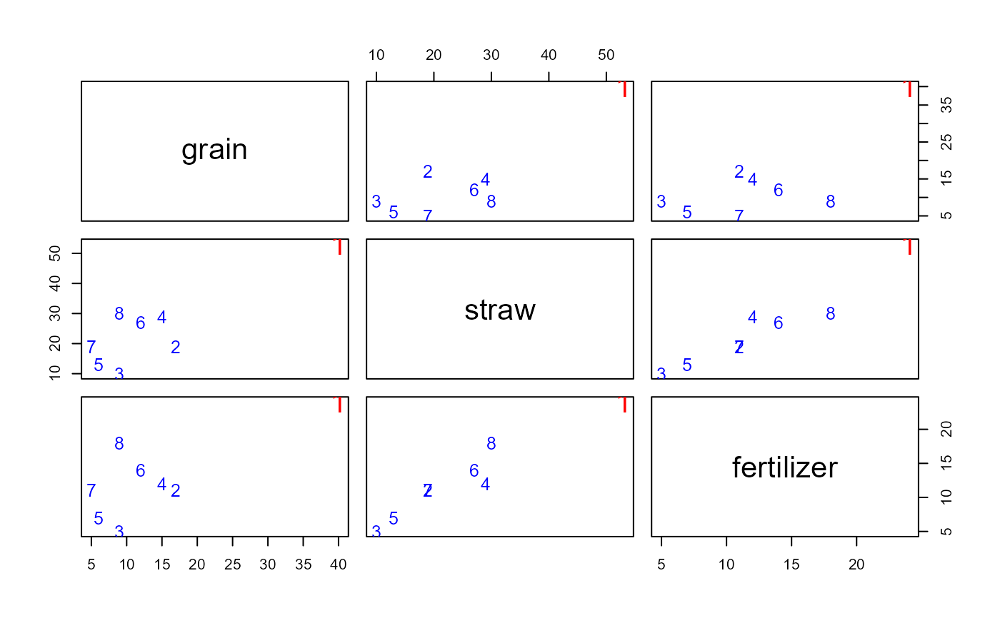
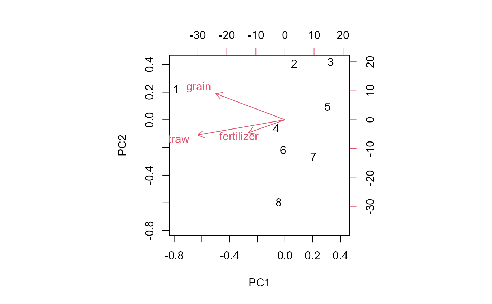
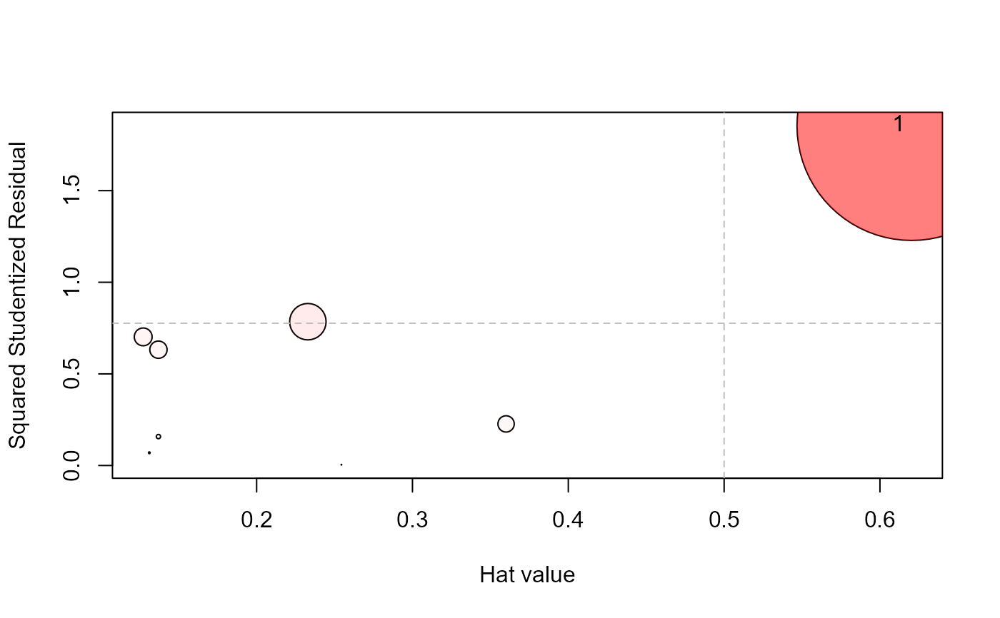
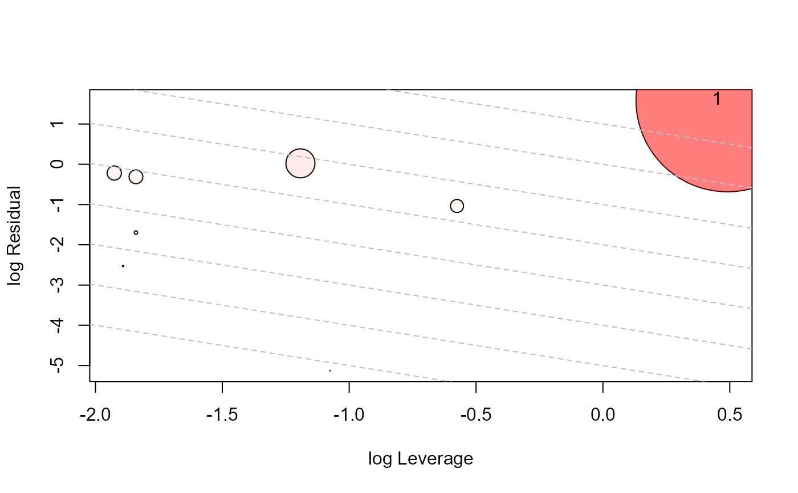

A small data set on the use of fertilizer (x) in relation to the amount of grain (y1) and straw (y2) produced.
Format
A data frame with 8 observations on the following 3 variables.
- grain
amount of grain produced
- straw
amount of straw produced
- fertilizer
amount of fertilizer applied
Source
Anderson, T. W. (1984). An Introduction to Multivariate Statistical Analysis, New York: Wiley, p. 369.
References
Hossain, A. and Naik, D. N. (1989). Detection of influential observations in multivariate regression. Journal of Applied Statistics, 16 (1), 25-37.
Examples
data(Fertilizer)
# simple plots
plot(Fertilizer, col=c('red', rep("blue",7)),
cex=c(2,rep(1.2,7)),
pch=as.character(1:8))

# A biplot shows the data in 2D. It gives another view of how case 1 stands out in data space
biplot(prcomp(Fertilizer))

# fit the mlm
mod <- lm(cbind(grain, straw) ~ fertilizer, data=Fertilizer)
Anova(mod)
#>
#> Type II MANOVA Tests: Pillai test statistic
#> Df test stat approx F num Df den Df Pr(>F)
#> fertilizer 1 0.94119 40.01 2 5 0.0008388 ***
#> ---
#> Signif. codes: 0 '***' 0.001 '**' 0.01 '*' 0.05 '.' 0.1 ' ' 1
# influence plots (m=1)
influencePlot(mod)

#> H Q CookD L R
#> 1 0.6203523 1.853289 3.449076 1.634021 4.881602
influencePlot(mod, type='LR')

#> H Q CookD L R
#> 1 0.6203523 1.853289 3.449076 1.634021 4.881602
influencePlot(mod, type='stres')
 #> H Q CookD L R
#> 1 0.6203523 1.853289 3.449076 1.634021 4.881602
#> H Q CookD L R
#> 1 0.6203523 1.853289 3.449076 1.634021 4.881602